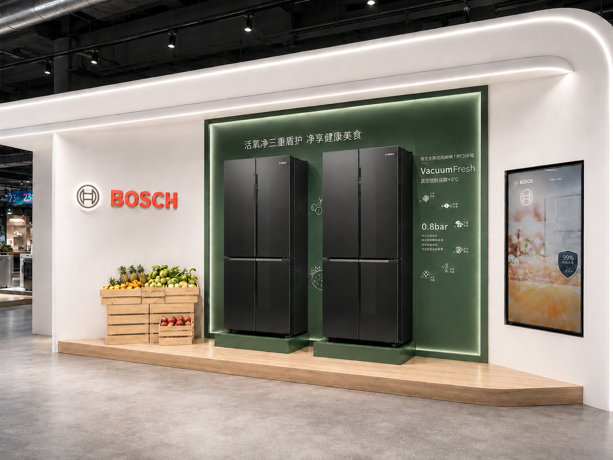
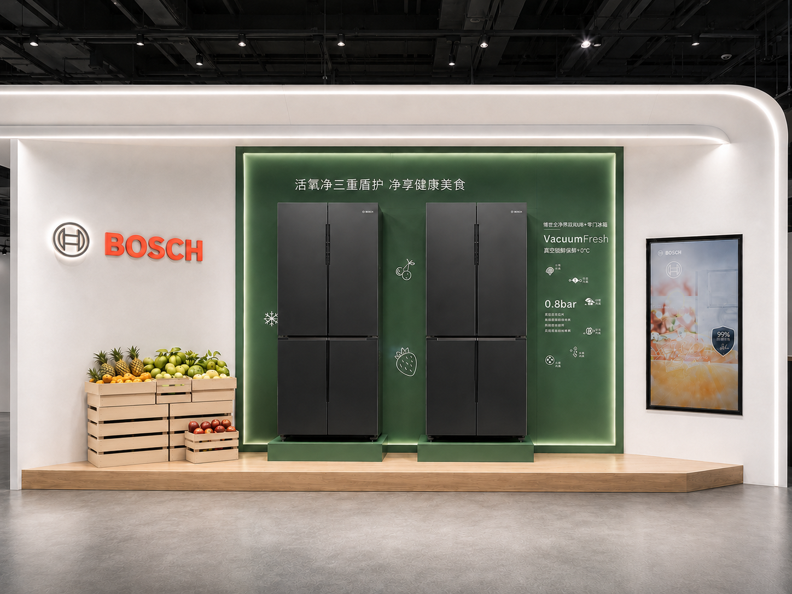
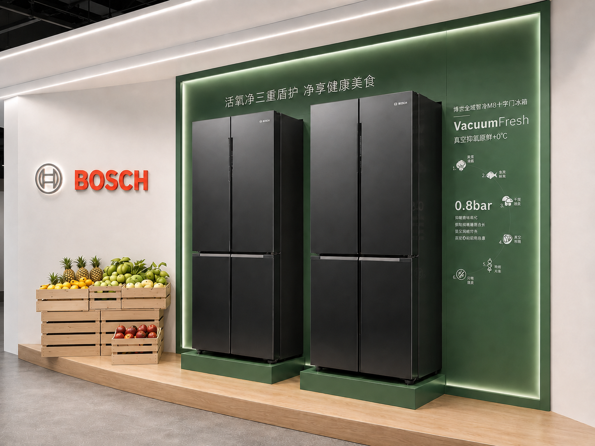
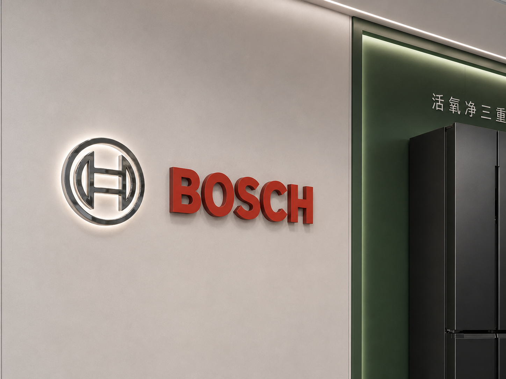
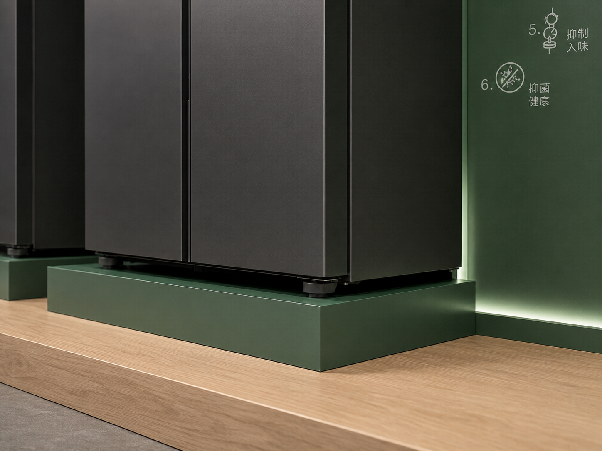

Bosch Refrigerator Display Cabinet
A refrigerator display should make freshness technology understandable while keeping the appliances—not the graphics—as the visual priority.
The Bosch Refrigerator Display Cabinet is a complete retail system designed and manufactured by REYI. Two refrigerator positions, a VacuumFresh feature wall, illuminated Bosch branding, fresh-food storytelling, digital content and one architectural surround work together as a clear premium appliance experience.

Two refrigerators framed by one complete freshness story
The cabinet gives the two closed dark refrigerators a strong architectural frame without turning the display into a wall of graphics. A deep-green illuminated zone holds VacuumFresh communication directly beside the appliances, while the Bosch logo, external produce crates and digital screen divide brand, freshness and media into readable areas. The long oak platform aligns every component and the softly curved white surround makes the full installation visible from different store approaches.

Four decisions keep the technology clear and the refrigerators primary
Appliance-first Framing
Dark closed doors sit against a restrained green field, using edge light and individual bases to define each refrigerator without revealing the interior.
Feature Communication
VacuumFresh messaging is positioned next to the products so customers can connect the preservation benefit directly to the refrigerator range.
Freshness Storytelling
New light-oak produce crates bring the food-preservation idea into the physical display while remaining separate from the appliances.
Integrated Brand & Media
Illuminated Bosch identification and a built-in digital screen extend the story without adding freestanding signs or visual clutter.
The product idea becomes clear through three controlled details

The green feature wall, individual bases and new light-oak produce crates explain freshness while keeping both refrigerator silhouettes clear and closed.

The Bosch mark uses controlled halo light, measured depth and generous space, keeping brand recognition precise rather than promotional.

The refrigerator edge, individual base, inset wall light and oak platform meet through aligned joints and a quiet, durable material transition.
Planning a refrigerator display cabinet?
Share the store plan, refrigerator schedule and communication brief with us. REYI can coordinate the cabinet footprint, appliance positions, feature graphics, integrated lighting, digital content, material samples, power routing and installation-ready construction. Programs can be ordered through a brand headquarters and delivered for use in markets worldwide.
- Store plan
- Refrigerator schedule
- Feature brief
- Cabinet dimensions
- Power & media needs
- Delivery timeline